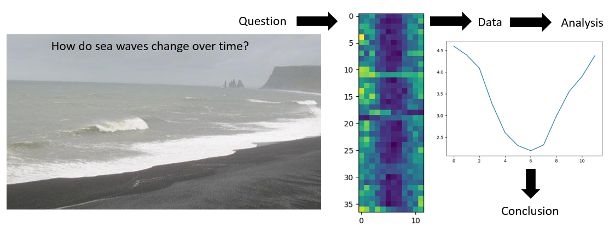

Summary and Setup
The best way to learn how to program is to do something useful, so this introduction to Python is built around a common scientific task: data analysis.
Sea surface waves
In this exercise we will read and manipulate ocean data. The data used has been generated by a spectral wave model WaveWatch III, which is a numerical tool for simulating and forecasting sea state.
When it is very windy or storms pass-over large sea areas, surface waves grow from short choppy wind-sea waves into powerful swell waves. The height and energy of the waves is larger in winter time, when there are more storms.
The example file contains a time series of wave data. The numbers representing the significant wave height: the mean wave height (trough to crest) of the highest third of the waves.
These values are monthly averages, over a period of 37 years. The first two columns are related to the timing of the data, years in the first column, then months. The wave height data are in the third column.
To investigate the wave data, we would like to
- Calculate an average and maximum
- Observe the seasonal cycle
- Take averages per month over successive years
- Find which months have the smallest and largest waves
- Plot the result to discuss and share with colleagues

Data Format
The data sets are stored in comma-separated values (CSV) format:
- the data represent waves at one location in the North Atlantic Ocean
- each row holds information for a single months,
- 3 columns represent year, month, and then the data value
The first seven rows of our first file look like this:
1979,1,3.788
1979,2,3.768
1979,3,4.774
1979,4,2.818
1979,5,2.734
1979,6,2.086
1979,7,2.066Each data value represents the significant wave height in metres, an average over the month.
For example, value “2.066” at row 7 column 3 of the data set above means that during the seventh month (July) of the first year (1979), the wave height was an average of 2.066 m.
In order to analyze this data and report to our colleagues, we’ll have to learn a little bit about programming.
Prerequisites
You need to understand the concepts of files and directories and how to start a Python interpreter before tackling this lesson. This lesson sometimes references Jupyter Notebook although you can use any Python interpreter mentioned in the [Setup][lesson-setup].
The commands in this lesson pertain to Python 3.
Setup
This lesson is designed to be run on a personal computer. All of the software and data used in this lesson are freely available online, and instructions on how to obtain them are provided below.
Install Python
Users of the NOC Data Science Platform or Binder Hub can skip this section and move on to the “Obtain lesson materials” section below.
Install Miniforge
If Conda has not been installed on your machine, then install Miniforge for your OS. As the name suggests, Miniforge is a “mini” version of the Anaconda Python distribution that includes only Conda, a Python 3 distribution, and any necessary OS-specific dependencies.
For convenience here are links to the 64-bit Miniconda installers.
Windows installation
After you downloaded the Windows installer, double click on it and follow the instructions (accept license, etc.). Make sure you tick on “Add Miniforge3 to my PATH environment variable” option.
Mac OSX or Linux installation
First, download the 64-bit Python 3 install script for Miniforge either by clicking the link above or using this command in your terminal:
BASH
wget "https://github.com/conda-forge/miniforge/releases/latest/download/Miniforge3-$(uname)-$(uname -m).sh"Run the Miniforge install script from your terminal. Follow the prompts on the installer screens. If you are unsure about any setting, accept the defaults (you can change them later if necessary).
Once the install script completes, you can remove it.
Verifying your Conda installation
In order to verify that you have installed Conda correctly run the
conda help command. Output of the command should look
similar to the following.
BASH
$ conda help
usage: conda [-h] [-V] command ...
conda is a tool for managing and deploying applications, environments and packages.
Options:
positional arguments:
command
clean Remove unused packages and caches.
config Modify configuration values in .condarc. This is modeled
after the git config command. Writes to the user .condarc
file (/Users/drpugh/.condarc) by default.
create Create a new conda environment from a list of specified
packages.
help Displays a list of available conda commands and their help
strings.
info Display information about current conda install.
init Initialize conda for shell interaction. [Experimental]
install Installs a list of packages into a specified conda
environment.
list List linked packages in a conda environment.
package Low-level conda package utility. (EXPERIMENTAL)
remove Remove a list of packages from a specified conda environment.
uninstall Alias for conda remove.
run Run an executable in a conda environment. [Experimental]
search Search for packages and display associated information. The
input is a MatchSpec, a query language for conda packages.
See examples below.
update Updates conda packages to the latest compatible version.
upgrade Alias for conda update.
optional arguments:
-h, --help Show this help message and exit.
-V, --version Show the conda version number and exit.
conda commands available from other packages:
envAt the bottom of the help menu you will see a section with some
optional arguments for the conda command. In particular you
can pass the --version flag which will return the version
number. Again output should look similar to the following.
Obtain lesson materials
- Download python-esces-data.zip.
- Create a folder called
swc-pythonon your Desktop. - Move downloaded files to
swc-python. - Unzip the files.
You should see a folder called data in the
swc-python directory on your Desktop.
Launch Python interface
To start working with Python, we need to launch a program that will interpret and execute our Python commands. Below we list several options. If you don’t have a preference, proceed with the top option in the list that is available on your machine. Otherwise, you may use any interface you like.
Option A: Jupyter Notebook
A Jupyter Notebook provides a browser-based interface for working with Python. If you installed Miniforge, you can launch a notebook from the terminal:
1. Navigate to the data directory:
If you’re using a Unix shell application, such as Terminal app in macOS, Console or Terminal in Linux, or Git Bash on Windows, execute the following command:
On Windows, you can use its native Command Prompt program. The
easiest way to start it up is pressing Windows Logo
Key+R, entering cmd, and hitting
Return. In the Command Prompt, use the following command to
navigate to the data folder:
cd /D %userprofile%\Desktop\swc-python\data2. Start Jupyter server
python -m notebook3. Launch the notebook by clicking on the “New” button on the right
and selecting “Python 3” from the drop-down menu: 
Option B: IPython interpreter
IPython is an alternative solution situated somewhere in between the plain-vanilla Python interpreter and Jupyter Notebook. It provides an interactive command-line based interpreter with various convenience features and commands. You should have IPython on your system if you installed Anaconda.
To start using IPython, execute:
ipythonOption C: plain-vanilla Python interpreter
To launch a plain-vanilla Python interpreter, execute:
pythonIf you are using Git Bash on
Windows, you have to call Python via
winpty:
winpty python